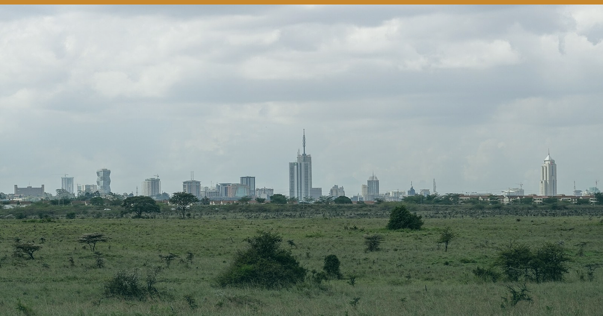

Photo: Timothy A. Gonsalves · Wikimedia Commons · CC BY-SA 4.0
Tonight, an expert brief: a split now visible in South African itineraries that East Africa should expect to…
Tonight, an expert brief: a split now visible in South African itineraries that East Africa should expect to import.
━━━━━━━━━
1️⃣ THE SAFARI TRIP IS COMING APART AT THE CITY END
Inbound operators in South Africa report the same pattern: the client books Cape Town themselves, then comes to a specialist for the safari. Rhino Africa's David Ryan says those enquiries have "increased significantly" — "Cape Town is becoming like a European city." Giltedge's Robyn-Lea Meyer calls it "definitely a consistent pattern", but sees it more from advisers than consumers, driven by their own preferred-supplier agreements. Trans Africa Safaris' Jennifer Paterson is the dissent worth keeping: little change over the past year. (Tourism Update, 4 September 2026.)
What everyone is missing. This reads as a channel story. It is a pricing-power story, running in opposite directions along one itinerary. What held the bundle together was never loyalty. It was logistics — light aircraft schedules, luggage limits, private-reserve transfers, lodge availability that moves weekly. Where that complexity exists, the intermediary keeps the booking and price stays illegible. A city night has none of it, so the booking walks and the room is bought against a comp set the guest can see in full.
One trend therefore commoditises the city bed and hardens the lodge's margin. Inference, labelled as ours: it would land here just as our supply does. Kenya has 4,922 of 6,190 pipeline rooms already under construction (W Hospitality Group, 10 March 2026).
And note where Meyer says that booking goes. Not to an OTA — to a rival hotel already inside the adviser's agreement. A contracting failure, not a rate failure, and the 2027 round is being negotiated now.
🎯 So what — CITY: audit which consortia, corporate and adviser programmes you are genuinely loaded on, before MKTE (6–8 Oct). Win the adviser, not the discount. BUSH: complexity is the moat — fund the operations desk. BEACH: bundle transfers and sea-days into something no OTA can reassemble.
🏷 City, Bush, Beach | 🇿🇦→🇰🇪 🇺🇬 🇹🇿 🇷🇼 | Reported (SA pattern) / Inference (EA read) | impact:strategy
━━━━━━━━━
🇺🇸🇺🇬 11 Sep — the CDC order rerouting Uganda and South Sudan arrivals through four US airports expires 4:59pm EDT (CDC, 12 August 2026). Renewed or lapsed, tell your US agents.
🇰🇪 14 Sep — EPRA closes the current fuel cycle.
🇰🇪 6–8 Oct — Magical Kenya Travel Expo, Uhuru Gardens. The 2027 contracting room.
💰 COST PULSE: Kenya's electricity pass-throughs — fuel energy cost KSh 3.20/unit plus forex adjustment KSh 1.48/unit — now add over KSh 5.00 to every kWh (EPRA tariff adjustment, July 2026 billing). Read that line, not the tariff band.
🔗 This edition on the web: eahospitalitypulse.com/editions/pulse-2026-09-06-evenin…
💼 Today's Big Read on LinkedIn: linkedin.com/company/ea-hospitality-pulse/
— EA Hospitality Pulse | Daily intelligence for city, bush & beach properties
📣 Telegram (full editions) 💬 WhatsApp (daily skim) 💼 LinkedIn (the Big Read) 🗂 Every edition